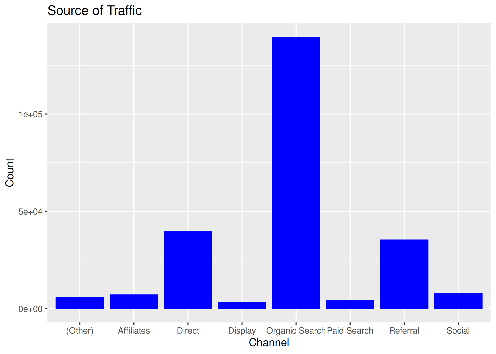
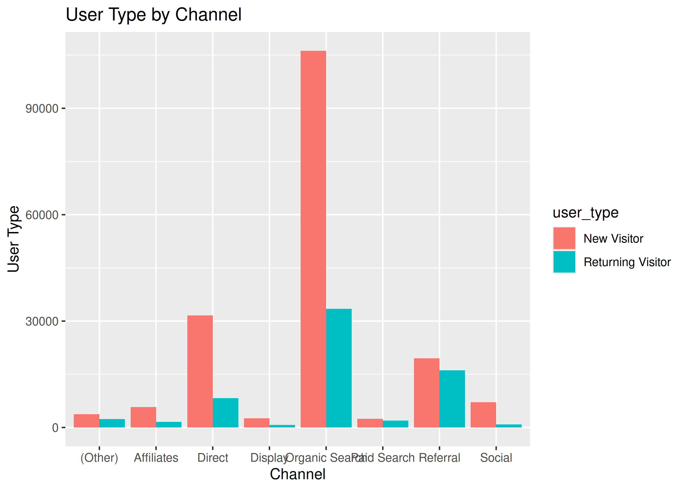
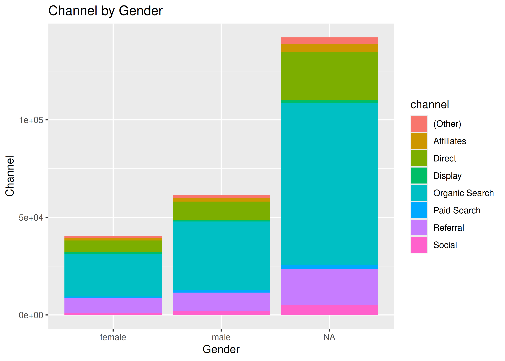
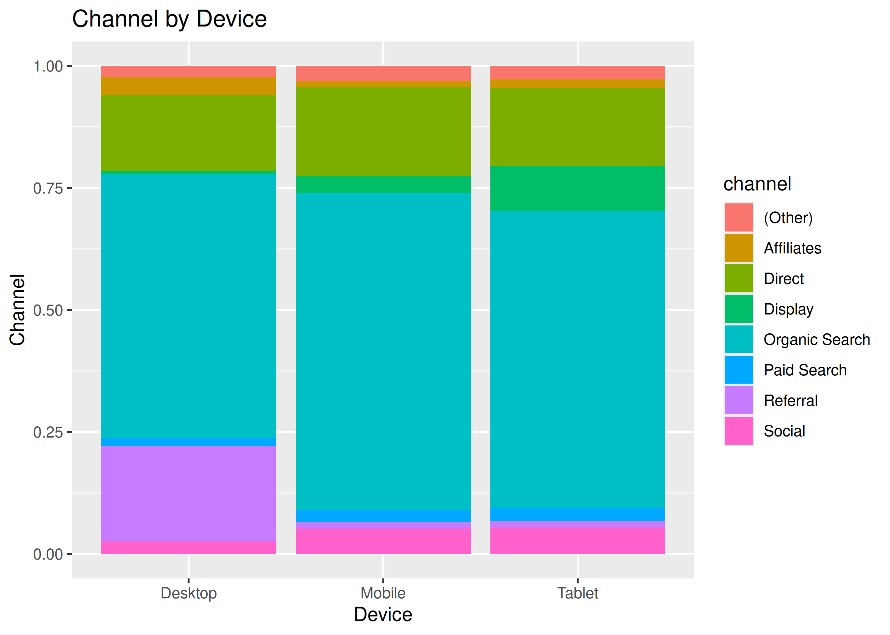
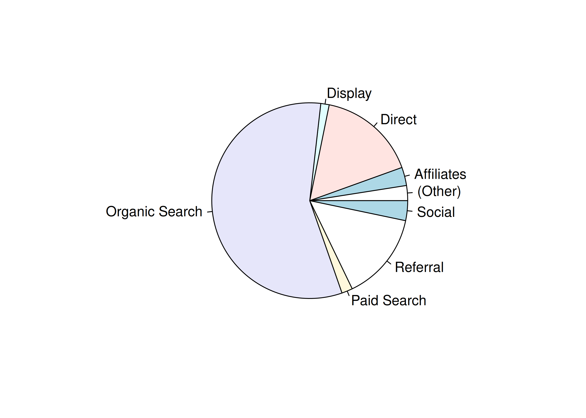
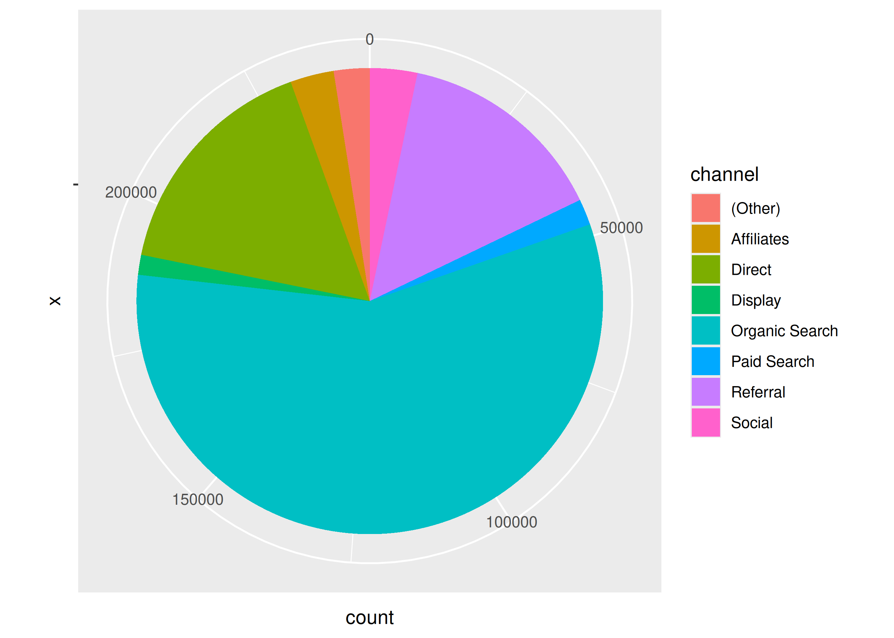

library(dplyr)
library(readr)14 Exercise Solutions
14.1 Introduction
Try every Your Turn before reading its solution — the struggle is the lesson. Worked solutions below cover @dplyr-basics, @tidying-data-with-tidyr, @date-and-time-in-r, @date-arithmetic-time-zones, @categorical-data-in-r and @forcats-manipulation. Remaining chapters are open stubs — to contribute one, open an issue or pull request with the chapter, the question, and a runnable chunk in this book’s style (|>-first, same data as the chapter).
We will use the following R packages:
14.2 dplyr Basics
ecom <-
read_csv('https://raw.githubusercontent.com/rsquaredacademy/datasets/master/web.csv',
col_types = cols_only(device = col_factor(levels = c("laptop", "tablet", "mobile")),
referrer = col_factor(levels = c("bing", "direct", "social", "yahoo", "google")),
purchase = col_logical(), n_pages = col_double(), n_visit = col_double(),
duration = col_double(), order_value = col_double(), order_items = col_double()
)
)Q1. What is the average number of pages visited by purchasers and non-purchasers?
ecom |>
summarise(mean_pages = mean(n_pages), .by = purchase)# A tibble: 2 × 2
purchase mean_pages
<lgl> <dbl>
1 FALSE 4.79
2 TRUE 15.8 Purchasers browse far more pages (~16 vs ~5) — the signal behind the AOV case study.
Q2. What is the average time on site for purchasers vs non-purchasers?
ecom |>
summarise(mean_time = mean(duration), .by = purchase)# A tibble: 2 × 2
purchase mean_time
<lgl> <dbl>
1 FALSE 355.
2 TRUE 359.Time on site barely differs (~355 vs ~359 seconds): page depth, not duration, separates buyers here.
Q3. What is the average number of pages visited by purchasers and non-purchasers using mobile?
ecom |>
filter(device == "mobile") |>
summarise(mean_pages = mean(n_pages), .by = purchase)# A tibble: 2 × 2
purchase mean_pages
<lgl> <dbl>
1 FALSE 4.99
2 TRUE 16.2 14.3 Tidying Data with tidyr
library(tidyr)
mockstring <-
read_csv('https://raw.githubusercontent.com/rsquaredacademy/datasets/master/mock_strings.csv',
show_col_types = FALSE)Q1. Reshape the mean of n_visit and order_items by referrer from wide to long.
ecom |>
summarise(across(c(n_visit, order_items), \(x) mean(x, na.rm = TRUE)),
.by = referrer) |>
pivot_longer(-referrer, names_to = "metric", values_to = "mean_value")# A tibble: 10 × 3
referrer metric mean_value
<fct> <chr> <dbl>
1 google n_visit 5.05
2 google order_items 1.11
3 yahoo n_visit 5.05
4 yahoo order_items 1.71
5 direct n_visit 4.90
6 direct order_items 1.51
7 bing n_visit 4.77
8 bing order_items 1.22
9 social n_visit 5.07
10 social order_items 1.36Q2. Split the email column of mockstring at "@" and reunite it — does the round-trip hold?
split <- mockstring |>
select(email) |>
separate(email, into = c("user", "domain"), sep = "@", remove = FALSE)
reunited <- split |>
unite("rejoined", user, domain, sep = "@", remove = TRUE)
identical(reunited$rejoined, mockstring$email)[1] TRUEYes — every row round-trips (TRUE), since each address holds exactly one "@".
Q3. Run the complete() example without fill: what does the missing count become, and why?
ecom |>
filter(purchase) |>
count(device, purchase) |>
complete(device, purchase = c(TRUE, FALSE))# A tibble: 6 × 3
device purchase n
<fct> <lgl> <int>
1 laptop FALSE NA
2 laptop TRUE 31
3 tablet FALSE NA
4 tablet TRUE 36
5 mobile FALSE NA
6 mobile TRUE 36The missing cells become NA, not 0: with no fill, complete() adds the absent combinations but has no value to put in n, so the count is unknown (NA). Pass fill = list(n = 0L) when a missing combination genuinely means “zero events”.
14.4 Date & Time: Parsing and Components
library(lubridate)
transact <-
read_csv('https://raw.githubusercontent.com/rsquaredacademy/datasets/master/transact.csv',
show_col_types = FALSE)Q1. Current date, current time, AM or PM, and leap years.
today()[1] "2026-10-05"now()[1] "2026-10-05 18:19:14 UTC"pm(now())[1] TRUEleap_year(c(2018, 2016))[1] FALSE TRUE2018 was not a leap year (FALSE); 2016 was (TRUE).
Q2. R 1.0.0 was released on 2000-02-29 08:55:23 UTC. Save it as a Date from character, a Date from origin + number, POSIXct, POSIXlt (extracting month day, day of year, month, zone) and ISODate.
as.Date("2000-02-29")[1] "2000-02-29"as.Date(11016, origin = "1970-01-01")[1] "2000-02-29"as.POSIXct("2000-02-29 08:55:23", tz = "UTC")[1] "2000-02-29 08:55:23 UTC"lt <- as.POSIXlt("2000-02-29 08:55:23", tz = "UTC")
c(month_day = lt$mday, day_of_year = lt$yday, month = lt$mon + 1L, zone = lt$zone) month_day day_of_year month zone
"29" "59" "2" "UTC" ISOdate(2000, 2, 29, 8, 55, 23, tz = "UTC")[1] "2000-02-29 08:55:23 UTC"$mon is zero-indexed, hence + 1L; $yday is 59 (zero-indexed — the 60th day of the leap year).
Q3. Create July 5th, 2019 from each spelling with as.Date() and the correct format.
as.Date("July-05-19", format = "%B-%d-%y")[1] "2019-07-05"as.Date("JUL-05-19", format = "%b-%d-%y")[1] "2019-07-05"as.Date("05.07.19", format = "%d.%m.%y")[1] "2019-07-05"as.Date("5-July 2019", format = "%d-%B %Y")[1] "2019-07-05"as.Date("July 5th, 2019", format = "July %dth, %Y")[1] "2019-10-05"as.Date("July 05, 2019", format = "%B %d, %Y")[1] "2019-07-05"as.Date("2019-July- 05", format = "%Y-%B- %d")[1] "2019-07-05"as.Date("05/07/2019", format = "%d/%m/%Y")[1] "2019-07-05"as.Date("07/05/2019", format = "%m/%d/%Y")[1] "2019-07-05"as.Date("7/5/2019", format = "%m/%d/%Y")[1] "2019-07-05"as.Date("07/5/19", format = "%m/%d/%y")[1] "2019-07-05"as.Date("2019-07-05")[1] "2019-07-05"Note the ambiguous pairs: 05/07/2019 vs 07/05/2019 is day-first vs month-first — the format string, not the data, decides. as.Date() matches literals ("July ", "th", ", ") character-for-character.
Q4. Parse the same spellings with strptime() / parse_date_time() / helpers.
dates <- c("July-05-19", "JUL-05-19", "05.07.19", "5-July 2019",
"July 5th, 2019", "July 05, 2019", "2019-July- 05", "05/07/2019",
"07/05/2019", "7/5/2019", "07/5/19", "2019-07-05")
parse_date_time(dates, orders = c("Bdy", "bdy", "dmy", "dBY", "BYd",
"dmy", "mdy", "mdy", "mdy", "mdy", "ymd")) [1] "2019-07-05 UTC" "2019-07-05 UTC" "2019-07-05 UTC" "2019-07-05 UTC"
[5] "2019-07-05 UTC" "2019-07-05 UTC" "2019-07-05 UTC" "2019-07-05 UTC"
[9] "2019-05-07 UTC" "2019-05-07 UTC" "2019-05-07 UTC" "2019-07-05 UTC"mdy("July 05, 2019")[1] "2019-07-05"dmy("05.07.19")[1] "2019-07-05"ymd("2019-07-05")[1] "2019-07-05"One parse_date_time() call with several orders handles the whole mixed vector — prefer helpers (mdy()/dmy()/ymd()) when a column uses a single convention.
Q5. From the Due column of transact, tabulate year, labelled month, labelled weekday, hour and quarter.
transact |>
mutate(due_year = year(Due),
due_month = month(Due, label = TRUE),
due_wday = wday(Due, label = TRUE),
due_hour = hour(Due),
due_quarter = quarter(Due)) |>
count(due_year, due_month, due_wday, due_hour, due_quarter)# A tibble: 162 × 6
due_year due_month due_wday due_hour due_quarter n
<dbl> <ord> <ord> <int> <int> <int>
1 2012 Feb Sun 0 1 17
2 2012 Feb Mon 0 1 12
3 2012 Feb Tue 0 1 12
4 2012 Feb Wed 0 1 16
5 2012 Feb Thu 0 1 13
6 2012 Feb Fri 0 1 11
7 2012 Feb Sat 0 1 6
8 2012 Mar Sun 0 1 12
9 2012 Mar Mon 0 1 17
10 2012 Mar Tue 0 1 6
# ℹ 152 more rowsdue_hour is 0 everywhere: Due is a Date (midnight, no time component) — hour() on dates is always 0.
Q6. R 2.0.0 (2004-10-04 14:24:38) with make_date() and make_datetime(); R 3.0.0 (2013-04-03 07:12:36) via update().
r200 <- make_datetime(2004, 10, 4, 14, 24, 38)
r200_date <- make_date(2004, 10, 4)
update(r200, year = 2013, month = 4, mday = 3, hour = 7, min = 12, sec = 36)[1] "2013-04-03 07:12:36 UTC"14.5 Date & Time: Arithmetic and Time Zones
Q1. Vacation length, shifted vacation, invoice settlement and employment length.
vac_start <- ymd("2020-04-19")
vac_end <- ymd("2020-04-25")
vac_start %--% vac_end[1] 2020-04-19 UTC--2020-04-25 UTCas.period(vac_start %--% vac_end)[1] "6d 0H 0M 0S"# shift the start by 10 days and the end by 2 weeks, then recompute
vac_start2 <- vac_start + days(10)
vac_end2 <- vac_end + weeks(2)
as.period(vac_start2 %--% vac_end2)[1] "10d 0H 0M 0S"receivables <-
read_csv('https://raw.githubusercontent.com/rsquaredacademy/datasets/master/receivables.csv',
show_col_types = FALSE)
receivables |>
mutate(invoice_date = mdy(invoice_date), due_date = mdy(due_date),
settled_date = mdy(settled_date),
days_to_settle = settled_date - invoice_date,
days_overdue = settled_date - due_date) |>
select(invoice_number, days_to_settle, days_overdue) |>
head()# A tibble: 6 × 3
invoice_number days_to_settle days_overdue
<dbl> <drtn> <drtn>
1 611365 13 days -17 days
2 7900770 36 days 6 days
3 9231909 5 days -25 days
4 9888306 35 days 5 days
5 15752855 34 days 4 days
6 18104516 26 days -4 days hr <-
read_csv('https://raw.githubusercontent.com/rsquaredacademy/datasets/master/hr-data.csv',
show_col_types = FALSE)
hr |>
filter(Termd == 1, !is.na(DateofTermination)) |>
mutate(hire = mdy(DateofHire), term = mdy(DateofTermination),
employed = term - hire) |>
select(Employee_Name, hire, term, employed) |>
head()# A tibble: 6 × 4
Employee_Name hire term employed
<chr> <date> <date> <drtn>
1 Howard, Estelle 2015-02-16 2015-04-15 58 days
2 Smith, Leigh Ann 2011-09-26 2013-09-25 730 days
3 Bunbury, Jessica 2011-08-15 2014-08-02 1083 days
4 Gill, Whitney 2014-07-07 2015-09-05 425 days
5 Guilianno, Mike 2011-03-07 2014-10-31 1334 days
6 Becker, Renee 2014-07-07 2015-09-12 432 daysThe base vacation is 6 days; after shifting it spans 10 days. Positive days_overdue means the customer paid late; filter Termd == 1 (plus a non-missing termination date) so only terminated employees count.
Q2. Your timezone, daylight savings and the current UTC time.
Sys.timezone()[1] "UTC"dst(now())[1] FALSEnow("UTC")[1] "2026-10-05 18:19:15 UTC"Q3. Round transact due dates: up to weeks, down to days, back to the start of the month.
transact |>
mutate(due_week_up = ceiling_date(Due, "week"),
due_day_down = floor_date(Due, "day"),
due_month_start = rollback(Due, roll_to_first = TRUE)) |>
select(Due, due_week_up, due_day_down, due_month_start) |>
head()# A tibble: 6 × 4
Due due_week_up due_day_down due_month_start
<date> <date> <date> <date>
1 2013-02-01 2013-02-03 2013-02-01 2013-02-01
2 2013-02-25 2013-03-03 2013-02-25 2013-02-01
3 2013-08-02 2013-08-04 2013-08-02 2013-08-01
4 2013-03-12 2013-03-17 2013-03-12 2013-03-01
5 2012-11-24 2012-11-25 2012-11-24 2012-11-01
6 2012-02-26 2012-03-04 2012-02-26 2012-02-01 Due values are whole dates, so rounding down to days is a no-op (midnight already); ceiling_date() moves each due date forward to its week boundary.
14.6 Categorical Data Fundamentals
analytics_raw <- readRDS("analytics_raw.rds")Q1. Quantitative or qualitative? Quantitative: Age, Annual Sales, Weight, Height, Job/Work Experience. Qualitative: Gender, Education Level, Vehicle Type, Ice Cream Flavor, Blood Group, Color, Mode of Payment. (Education Level is qualitative but ordered — see ordered factors below.)
Q2. Dichotomous or polychotomous? Dichotomous (exactly two outcomes): Heads / Tails, Rich / Poor, Democrat / Republican. Polychotomous (three or more): Blood Group, Transportation Mode, Education Level.
Q3–Q9. Factor checks, coercion and level control on analytics_raw.
# Q3: which of these are already factors? (raw file: none — all character)
sapply(analytics_raw[c("device", "page_depth", "landing_page")], is.factor) device page_depth landing_page
FALSE FALSE FALSE # Q4: coerce the categorical columns (page_depth stays numeric;
# `city` is not in this file, so it is skipped)
cat_vars <- c("device", "os", "browser", "user_type", "channel",
"gender", "landing_page", "exit_page", "country")
analytics_raw[cat_vars] <- lapply(analytics_raw[cat_vars], factor)
# Q5: keep only male/female levels in gender
gender <- factor(analytics_raw$gender, levels = c("male", "female"))
levels(gender)[1] "male" "female"# Q6: admit NA as a level (no-op here — this file has no missing gender,
# but the call is what makes unseen NAs explicit downstream)
library(forcats)
gender <- fct_na_value_to_level(gender, level = NA)
levels(gender)[1] "male" "female" NA # Q7: label that NA level "missing"
gender <- fct_na_value_to_level(gender, level = "(Missing)")
levels(gender)[1] "male" "female" "(Missing)"# Q8: relabel user_type levels
user_type <- fct_recode(factor(analytics_raw$user_type),
"New" = "New Visitor", "Returning" = "Returning Visitor")
levels(user_type)[1] "New" "Returning"# Q9: is user_rating ordered? coerce if not
is.ordered(analytics_raw$user_rating)[1] FALSEuser_rating <- ordered(analytics_raw$user_rating)
is.ordered(user_rating)[1] TRUEQ10–Q13. Level counts, categories, frequencies and a two-way summary.
# Q10: number of levels
sapply(analytics_raw[c("browser", "channel", "landing_page", "exit_page")],
\(x) nlevels(factor(x))) browser channel landing_page exit_page
26 8 33 33 # Q11: the categories themselves
lapply(analytics_raw[c("os", "channel", "browser", "gender", "user_type")],
\(x) levels(factor(x)))$os
[1] "(not set)" "Android" "BlackBerry" "Chrome OS"
[5] "Firefox OS" "iOS" "Linux" "Macintosh"
[9] "OS/2" "Playstation 4" "Playstation Vita" "Samsung"
[13] "Tizen" "Windows" "Windows Phone" "Xbox"
$channel
[1] "(Other)" "Affiliates" "Direct" "Display"
[5] "Organic Search" "Paid Search" "Referral" "Social"
$browser
[1] "Amazon Silk" "Android Browser"
[3] "Android Webview" "APKPure"
[5] "BlackBerry" "Chrome"
[7] "Coc Coc" "Edge"
[9] "Firefox" "Internet Explorer"
[11] "Maxthon" "Mozilla Compatible Agent"
[13] "MRCHROME" "Opera"
[15] "Opera Mini" "Playstation 4"
[17] "Playstation Vita Browser" "Puffin"
[19] "Safari" "Safari (in-app)"
[21] "Samsung Internet" "SeaMonkey"
[23] "Seznam" "UC Browser"
[25] "User-Agent:Mozilla" "YaBrowser"
$gender
[1] "female" "male"
$user_type
[1] "New Visitor" "Returning Visitor"# Q12: frequencies
fct_count(factor(analytics_raw$channel))# A tibble: 8 × 2
f n
<fct> <int>
1 (Other) 6073
2 Affiliates 7388
3 Direct 39853
4 Display 3375
5 Organic Search 139668
6 Paid Search 4395
7 Referral 35615
8 Social 8031fct_count(factor(analytics_raw$user_type))# A tibble: 2 × 2
f n
<fct> <int>
1 New Visitor 179045
2 Returning Visitor 65353# Q13: channel by user_type — counts and column shares
table(factor(analytics_raw$channel), factor(analytics_raw$user_type))
New Visitor Returning Visitor
(Other) 3718 2355
Affiliates 5785 1603
Direct 31576 8277
Display 2631 744
Organic Search 106197 33471
Paid Search 2477 1918
Referral 19511 16104
Social 7150 881proportions(table(factor(analytics_raw$channel),
factor(analytics_raw$user_type)), margin = 2)
New Visitor Returning Visitor
(Other) 0.02076573 0.03603507
Affiliates 0.03231031 0.02452833
Direct 0.17635790 0.12665065
Display 0.01469463 0.01138433
Organic Search 0.59313022 0.51215705
Paid Search 0.01383451 0.02934831
Referral 0.10897260 0.24641562
Social 0.03993409 0.0134806414.7 Factor Manipulation with forcats
library(forcats)
data <- readRDS("analytics.rds")Q1–Q2. Frequencies in descending order; is laptop a device level?
data |> pull(device) |> fct_count()# A tibble: 3 × 2
f n
<fct> <int>
1 Desktop 177282
2 Mobile 63482
3 Tablet 3634data |> pull(landing_page) |> fct_count()# A tibble: 33 × 2
f n
<fct> <int>
1 Accessories 4529
2 Apparel 32234
3 Bags 3462
4 Basket 3920
5 Brands 128
6 Drinkware 2806
7 Eco 75
8 Electronics 486
9 FAQ 2626
10 Fun 8
# ℹ 23 more rowsdata |> pull(exit_page) |> fct_count()# A tibble: 34 × 2
f n
<fct> <int>
1 Accessories 4856
2 Apparel 38318
3 Bags 4584
4 Basket 12072
5 Brands 129
6 Drinkware 3227
7 Eco 79
8 Electronics 470
9 FAQ 3455
10 Fun 11
# ℹ 24 more rows"laptop" %in% levels(data$device)[1] FALSEfct_count() sorts most-frequent-first. (device here holds Desktop/Mobile/Tablet, so "laptop" is not a level — it belongs to the ecom schema, not analytics.)
Q3–Q8. Collapsing, lumping, keeping and anonymizing levels.
# Q3: collapse account-related pages
data |> pull(landing_page) |>
fct_collapse(Account = c("My Account", "Register", "Sign In", "Your Info")) |>
fct_count() |> head(6)# A tibble: 6 × 2
f n
<fct> <int>
1 Accessories 4529
2 Apparel 32234
3 Bags 3462
4 Basket 3920
5 Brands 128
6 Drinkware 2806# Q4: lump landing pages behind fewer than 1000 visits into "Other"
data |> pull(landing_page) |> fct_lump_min(min = 1000) |> fct_count()# A tibble: 16 × 2
f n
<fct> <int>
1 Accessories 4529
2 Apparel 32234
3 Bags 3462
4 Basket 3920
5 Drinkware 2806
6 FAQ 2626
7 Home 135485
8 Lifestyle 5695
9 My Account 1121
10 New 6340
11 Office 2454
12 Search 2066
13 Shop by Brand 26826
14 Sign In 3184
15 Store 8979
16 Other 2671# Q5: top 10 landing and exit pages
data |> pull(landing_page) |> fct_lump_n(n = 10) |> fct_count()# A tibble: 11 × 2
f n
<fct> <int>
1 Accessories 4529
2 Apparel 32234
3 Bags 3462
4 Basket 3920
5 Home 135485
6 Lifestyle 5695
7 New 6340
8 Shop by Brand 26826
9 Sign In 3184
10 Store 8979
11 Other 13744data |> pull(exit_page) |> fct_lump_n(n = 10) |> fct_count()# A tibble: 12 × 2
f n
<fct> <int>
1 Accessories 4856
2 Apparel 38318
3 Bags 4584
4 Basket 12072
5 Home 88051
6 Lifestyle 13996
7 New 10426
8 Search 7185
9 Shop by Brand 25231
10 Store 17016
11 Other 22095
12 <NA> 568# Q6: landing pages with at least 5% of traffic
data |> pull(landing_page) |> fct_lump_prop(prop = 0.05) |> fct_count()# A tibble: 4 × 2
f n
<fct> <int>
1 Apparel 32234
2 Home 135485
3 Shop by Brand 26826
4 Other 49853# Q7: keep only the big-four browsers
data |> pull(browser) |>
fct_other(keep = c("Chrome", "Firefox", "Safari", "Edge")) |>
fct_count()# A tibble: 5 × 2
f n
<fct> <int>
1 Chrome 192176
2 Edge 3787
3 Firefox 6420
4 Safari 35323
5 Other 6692# Q8: anonymize page levels (stable within a session via seed)
set.seed(42)
data |> pull(landing_page) |> fct_anon() |> head()[1] 30 01 31 25 02 25
33 Levels: 01 02 03 04 05 06 07 08 09 10 11 12 13 14 15 16 17 18 19 20 ... 33Q9–Q15. Reordering, shuffling and reversing levels.
set.seed(42)
landing_page <- data$landing_page
browser <- data$browser
# Q9/Q10/Q11: Home first, Apparel second, Specials last
landing_page |> fct_relevel("Home") |> levels() |> head(4)[1] "Home" "Accessories" "Apparel" "Bags" landing_page |> fct_relevel("Apparel", after = 1L) |> levels() |> head(4)[1] "Accessories" "Apparel" "Bags" "Basket" landing_page |> fct_relevel("Specials", after = Inf) |> levels() |> tail(3)[1] "Wishlist" "Your Info" "Specials" # Q12: browsers by frequency
browser |> fct_infreq() |> levels() [1] "Chrome" "Safari"
[3] "Firefox" "Edge"
[5] "Samsung Internet" "Android Webview"
[7] "Opera" "Internet Explorer"
[9] "Safari (in-app)" "YaBrowser"
[11] "UC Browser" "Amazon Silk"
[13] "Android Browser" "Opera Mini"
[15] "Coc Coc" "User-Agent:Mozilla"
[17] "Puffin" "Playstation 4"
[19] "Mozilla Compatible Agent" "BlackBerry"
[21] "Maxthon" "SeaMonkey"
[23] "APKPure" "MRCHROME"
[25] "Playstation Vita Browser" "Seznam" # Q13: landing pages in order of appearance
landing_page |> fct_inorder() |> levels() |> head(6)[1] "Home" "Accessories" "Sign In" "Apparel"
[5] "Shop by Brand" "Lifestyle" # Q14: shuffled os levels
data |> pull(os) |> fct_shuffle() |> levels() [1] "(not set)" "Firefox OS" "Xbox" "OS/2"
[5] "Playstation 4" "Chrome OS" "Android" "Windows"
[9] "Macintosh" "Linux" "Playstation Vita" "Tizen"
[13] "Windows Phone" "Samsung" "BlackBerry" "iOS" # Q15: reversed browser levels
browser |> fct_rev() |> levels() [1] "YaBrowser" "User-Agent:Mozilla"
[3] "UC Browser" "Seznam"
[5] "SeaMonkey" "Samsung Internet"
[7] "Safari (in-app)" "Safari"
[9] "Puffin" "Playstation Vita Browser"
[11] "Playstation 4" "Opera Mini"
[13] "Opera" "MRCHROME"
[15] "Mozilla Compatible Agent" "Maxthon"
[17] "Internet Explorer" "Firefox"
[19] "Edge" "Coc Coc"
[21] "Chrome" "BlackBerry"
[23] "APKPure" "Android Webview"
[25] "Android Browser" "Amazon Silk" Q16. The plots.
library(ggplot2)
# 1: bar plot of channel
ggplot(data) +
geom_bar(aes(x = channel), fill = "blue") +
ggtitle("Source of Traffic") + xlab("Channel") + ylab("Count")
# 2: grouped bars, user_type by channel
ggplot(data) +
geom_bar(aes(x = channel, fill = user_type), position = "dodge") +
ggtitle("User Type by Channel") + xlab("Channel") + ylab("User Type")
# 3: stacked bars, channel by gender
ggplot(data) +
geom_bar(aes(x = gender, fill = channel)) +
ggtitle("Channel by Gender") + xlab("Gender") + ylab("Channel")
# 4: proportional bars, channel by device
data |>
select(device, channel) |>
table() |>
tibble::as_tibble() |>
ggplot(aes(x = device, y = n, fill = channel)) +
geom_bar(stat = "identity", position = "fill") +
ggtitle("Channel by Device") + xlab("Device") + ylab("Channel")
# 5: mosaic plots need ggmosaic (archived on CRAN) — out of scope;
# see the ggplot2 ebook instead.
# 6: pie and donut of channel
data |> pull(channel) |> table() |> pie()
data |>
pull(channel) |>
fct_count() |>
rename(channel = f, count = n) |>
ggplot() +
geom_bar(aes(x = "", y = count, fill = channel), width = 1,
stat = "identity") +
coord_polar("y", start = 0)
14.8 Open stubs
Chapters without Your Turn blocks still need proposed drills + solutions — contributions welcome (see above):
- @joining-tables-in-r-dplyr: join puzzles on
customer/order - @dplyr-helper-functions: sampling/slicing drills on
ecom - @r-pipe-magrittr: rewrite-a-chain exercises (
%>%→|>,_,\(x)) - @tibbles-in-r: tibble vs data.frame edge cases
- @strings-in-r: URL/email parsing variants on
mockstring - @import-data-in-r-basics and @import-data-in-r-advanced: import-parameter drills